⌘01
Web & Software Development
Mengembangkan aplikasi web dan menerjemahkan kebutuhan menjadi fitur yang dapat digunakan.
Halo, saya
Web Developer · Software Development · Data Science Enthusiast
Saya membangun solusi digital yang fungsional, terstruktur, dan berorientasi pada kebutuhan pengguna — dari perencanaan hingga implementasi.
01 / TENTANG SAYA
Saya lulusan S1 Informatika Universitas Muhammadiyah Malang yang tertarik mengubah kebutuhan menjadi produk digital yang berguna.
Pengalaman saya mencakup pengembangan sistem booking futsal berbasis web dan perencanaan sekaligus pengembangan website e-commerce. Saya terbiasa bekerja secara terstruktur, memperhatikan detail, berkolaborasi dalam tim, dan mempelajari teknologi baru.
02 / KEAHLIAN
Mengembangkan aplikasi web dan menerjemahkan kebutuhan menjadi fitur yang dapat digunakan.
Perancangan basis data, pengolahan data, dan eksplorasi analisis untuk mendukung keputusan.
Mendukung proses pengembangan melalui analisis kebutuhan dan pengujian sistem.
Mengutamakan kerja sama, koordinasi tim, presentasi, dan penyampaian informasi yang jelas.
03 / PENGALAMAN
BPS Kota Malang
Memimpin kelompok dalam pengumpulan data usaha/UMKM dan pengolahan data statistik, mengoordinasikan anggota tim, serta menyampaikan laporan hasil kerja kepada supervisor secara berkala.
View CertificateFakultas Ilmu Komputer, Universitas Brawijaya
Mengelola administrasi akademik dan mendukung operasional fakultas, sekaligus mengembangkan kemampuan komunikasi serta organisasi di lingkungan profesional.
View Certificate04 / PROYEK PILIHAN
Proyek yang menggabungkan pemecahan masalah, perencanaan, dan implementasi.
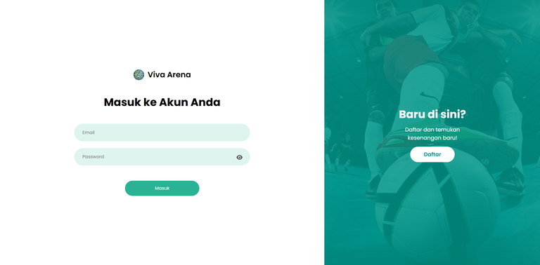
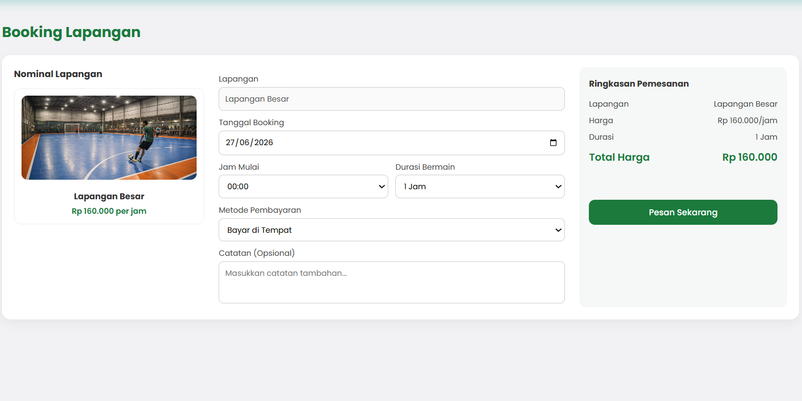
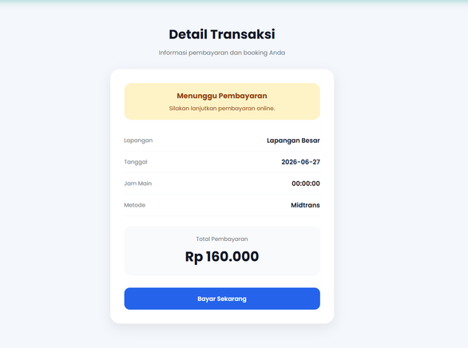
Viva Arena Malang
Mengembangkan sistem reservasi untuk membantu menggantikan proses pemesanan manual. Fitur meliputi manajemen jadwal, booking, pembayaran online, dan pengelolaan admin.
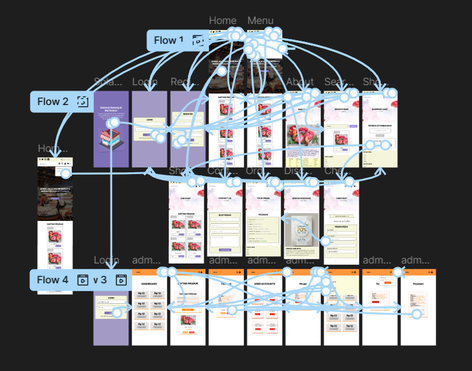
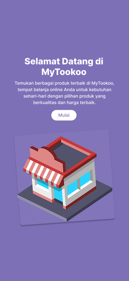
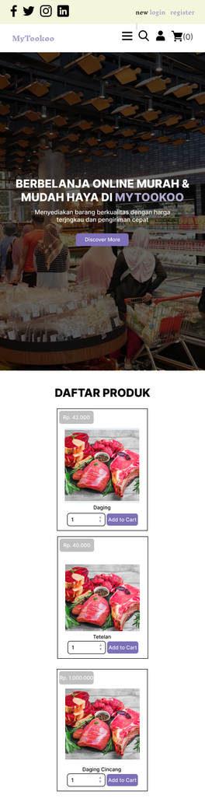
Toko Daging Online
Platform e-commerce untuk penjualan daging secara online. Berkontribusi dalam analisis kebutuhan pengguna, perancangan arsitektur, dan implementasi katalog produk, keranjang belanja, serta manajemen pesanan.
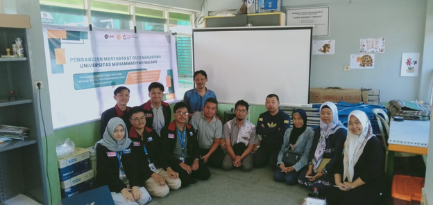
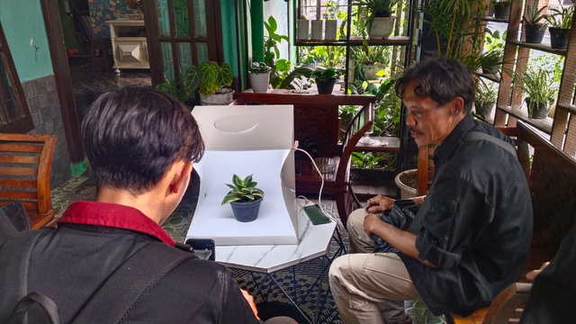
Klojen, Malang
Berperan dalam perencanaan kebutuhan digital bagi pelaku UMKM dan kolaborasi tim untuk mengembangkan solusi yang relevan serta mudah digunakan oleh masyarakat setempat.
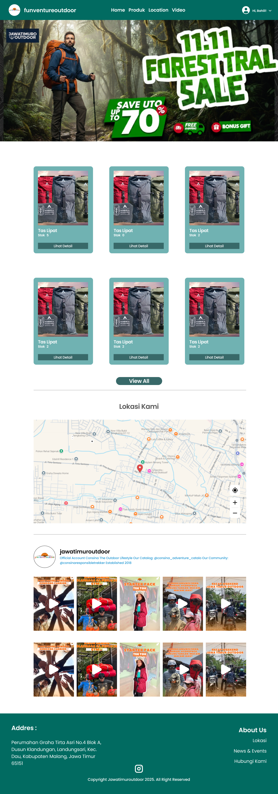
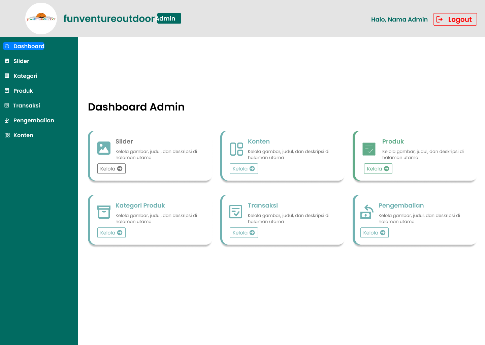
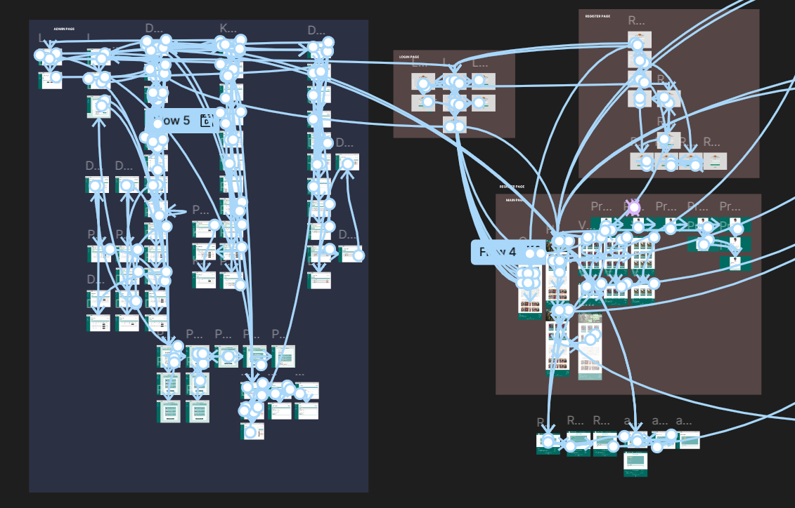
Kedungkandang, Malang
Aplikasi pemesanan perlengkapan outdoor berbasis web yang membantu pengguna mencari, memesan, dan mengelola perlengkapan untuk aktivitas camping, hiking, serta berbagai kegiatan alam lainnya.
05 / PENDIDIKAN
2022 — 2026
Sarjana Komputer · Program Studi Informatika
2018 — 2021
Teknik Komputer dan Jaringan
06 / SERTIFIKASI TOEFL
07 / SERTIFIKASI PELATIHAN
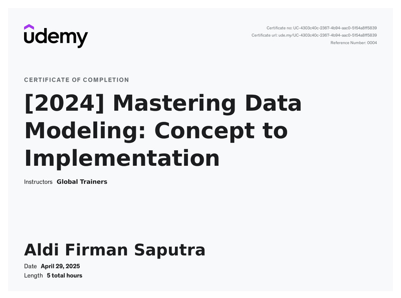
↗UDEMY · 2024
Perancangan basis data relasional, ER Diagram, normalisasi, dan penerapan struktur data untuk aplikasi.
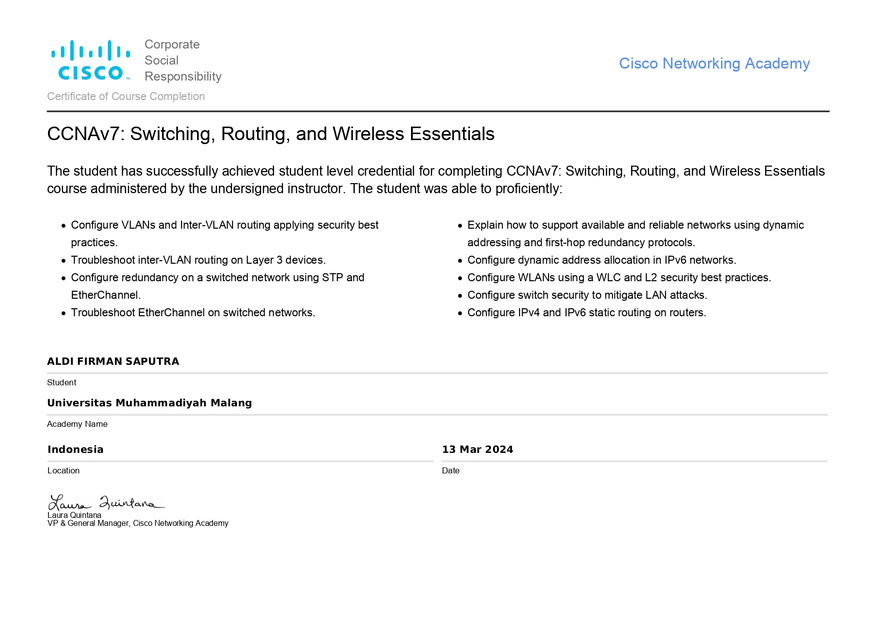
↗CISCO NETWORKING ACADEMY · 2024
Dasar jaringan komputer, VLAN, routing IPv4/IPv6, WLAN, STP, EtherChannel, dan keamanan switch.
08 / HUBUNGI SAYA
Terbuka untuk peluang, kolaborasi, dan percakapan seputar teknologi.
Kirim email ↗